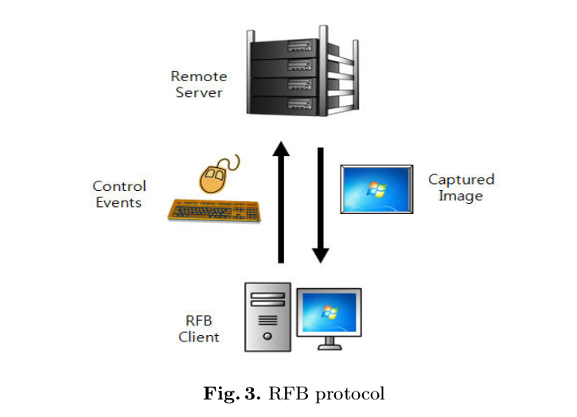
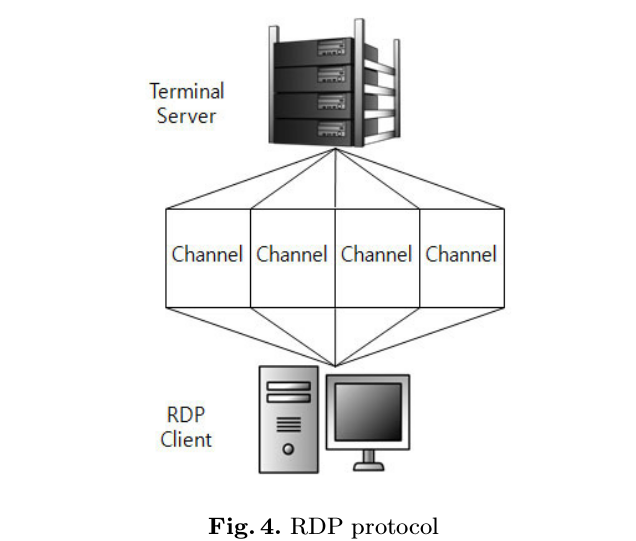
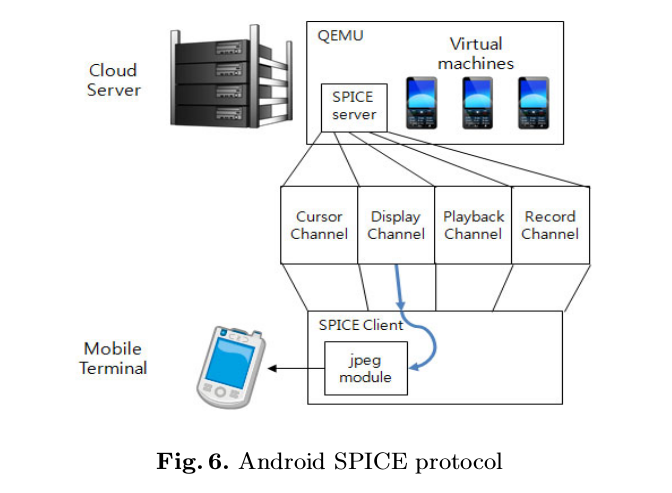

背景
云计算是目前计算机领域的一个热门领域，桌面虚拟化是其中的一个重要应用，即把桌面系统在服务器端虚拟化，然后通过传输协议传输数据到客户端来实现桌面虚拟化，这样的好处就在于不管用什么设备，只要通过客户端都可以访问到云端的系统，随时随地都可以在一个系统上工作。
目前有两大标准的桌面传输协议，分别是RBP和RDP。
- RBP有一个简单的架构，即直接把虚拟机的图形数据直接传输给客户端，客户端直接显示图像，有点类似于看网络视频。这样子就对网络的要求较高，高延迟情况下效果很差，但是客户端压力比较小，因此对客户机的性能要求较低，毕竟它只负责显示图像。

- RDP稍微复杂一点，使用的是图像局部刷新，它发送事件消息给客户端，提示需要刷新的图像区域并且提供数据，客户端根据消息数据生成图像数据显示出来。因此传输的数据量较少，适合于网络不好情况，但是缺点是客户端需要生成图像数据，对客户机有一定压力。

那么对于移动设备来说，很显然，RDP协议更适合移动设备，因为移动设备在3G，4G情况下不可能用耗费大流量的RFB协议，并且延迟比较高。而RDP协议由于传输的数据量较少，对网络条件要求不高。所以，针对于移动平台来说，RDP协议比较合适。
但是，由于RDP协议是微软的产品，受限于其证书，并不是开源产品，所以不能用于移动设备。那么，开源的类RDP协议的SPICE协议,就隆重登场了，结合我们的主题，在android平台上应用spice协议。下面，我们来介绍spice在android平台上的应用。
SPICE 协议在android平台的应用
Spice事实上并没有android版本，但是它有linux版本，而android是基于linux的，所以，我们可以通过使用NDK来交叉编译Spice库到android上使用。也就是说，我们可以通过使用JNI来调用libspice.so（通过NDK交叉编译），从而在android平台上使用Spice。

Spice服务器通过通道(Channel)来与客户端通信，其中jpeg模块是通过NDK编译好的库，使用JNI调用，把服务器发送过来图像命令转化为图像，再把图像交给android的View显示出来。
在实际使用中，需要对图像的解析过程进行优化，否则显示的延迟很大。一个解决方案是使用更快的jpeg解析库。
最后,推荐一个开源的spice安卓客户端remote-desktop-clients
以上只是对Spice工作原理的简单描述，详细介绍查看官方文档：
- spice_for_newbies
- spice入门(这是我根据spice官方文档翻译的中文版本)